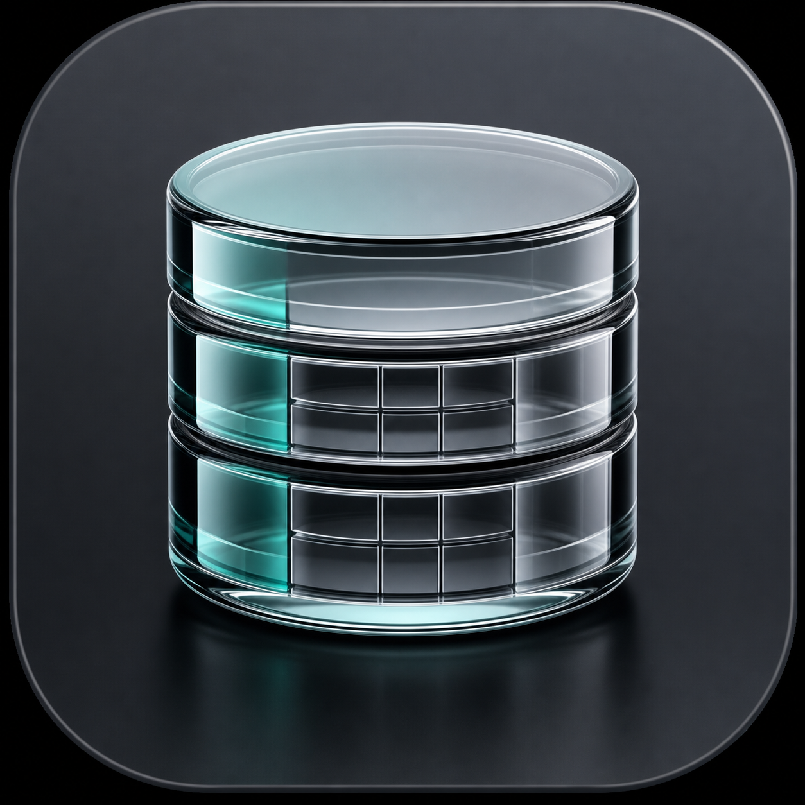

01
Scan data at a glance
Browse schemas, tables, and views. Filter, sort, page, count rows, and copy values from a native grid.

GlassDB Download v0.1.6Open SQLite files or connect to MySQL and PostgreSQL. Browse data, run SQL, and make deliberate edits in a focused native macOS workspace.
Requires macOS 26 · Signed and notarized · Sparkle updates included
SELECT * FROM customers⌘↵Everything in its place
GlassDB keeps the table grid at the center and the tools you need close by.
Browse schemas, tables, and views. Filter, sort, page, count rows, and copy values from a native grid.
Use the built-in SQL workspace with automatic SELECT limits, configurable timeouts, cancellation, and reconnect.
Save, test, duplicate, and reopen connections. Server passwords stay in the macOS Keychain.
Built for control
Database tools should make risky actions obvious. GlassDB stages row changes, shows the generated SQL, and only enables editing when a primary key can identify the exact row.
Database work, with less noise
Download GlassDB and start with a SQLite file, a saved server connection, or the built-in sample database.
Free and open source · Requires macOS 26